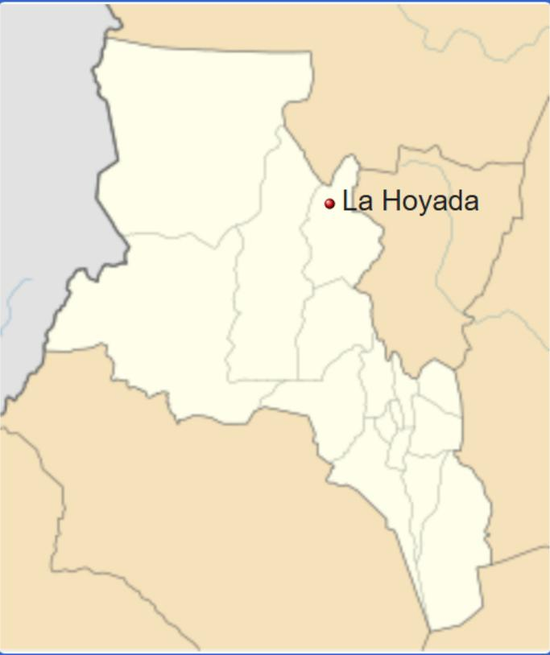

La Hoyada es una localidad del Departamento Santa María en la provincia Argentina de Catamarca.
Cuenta con 161 habitantes (Indec, 2001), lo que representa un incremento del 50,46% respecto a los 107 habitantes (Indec, 1991) del censo anterior.

Ocurrió el 4 de febrero de 1898, a las 12.57 de 6,4 en la escala de Richter; a 28º26' de Latitud Sur y 66º09' de
Longitud Oeste (28°26′59″S 66°9′0″O)
Destruyó la localidad de Saujil, y afectó severamente los pueblos de Pomán, Mutquín, y entorno. Hubo heridos y
contusos. Ante la desesperación, los habitantes del Departamento acudieron a la misericordia del Señor del
Milagro, patrono de esa localidad, que aligeró los corazones y desde entonces en agradecimiento, la gente del
departamento se reúne en Saujil cada 4 de febrero para conmemorar el milagro.